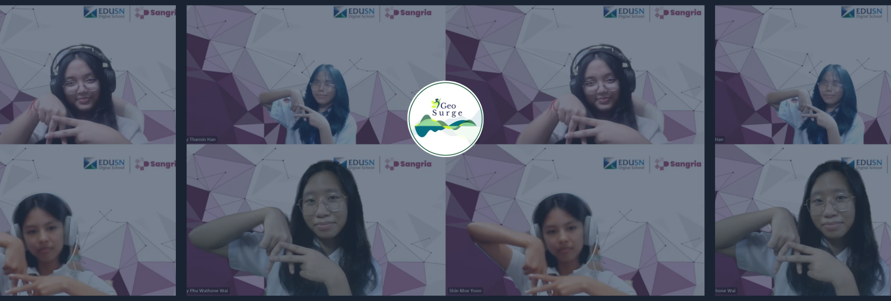

GeoSurge
Founded on April 23rd of 2024 by the Great Four Leaders and now leading each departments together!
They start from Zero to what it is now today with the idea and hope with only one goal in common.
"The Future"

GeoSurge
GeoSurge has became one of the best News Company in Myanmar under the care of these 4 Great Leaders!
They are always coming up with new ideas and fresh plans to share with the world!
"Hope"